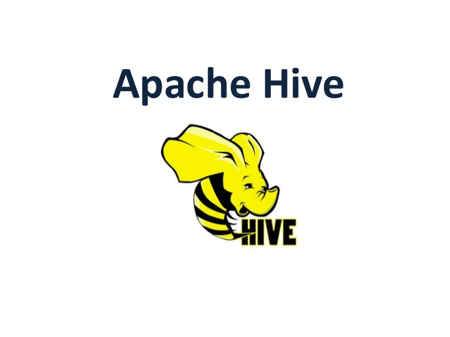

0 Project's Completed
Are You Hiring ?
Click To Checkout My ResumeHii there ! Myself Vrushabh Vaishnav and As an Data Science Intern, Machine Learning Engineer Intern : Leveraging Advanced Technologies for Optimal Results. With a deep passion for Machine Learning (ML), Deep Learning (DL), and MLOps, I am an accomplished engineer skilled in harnessing the power of modern web technologies to build exceptional websites. My expertise extends beyond aesthetics and functionality; I have a comprehensive understanding of ML and DL algorithms, frameworks, and techniques that enable me to create intelligent systems capable of analyzing vast amounts of data and delivering accurate predictions.
I leverage state-of-the-art tools and frameworks such as Docker,git actions etc to optimize workflows, ensuring scalability and reproducibility of ML processes.
I Have work in various technological Fields As well as as Machine learning Engineer intern at Ineuron.ai
I am seeking a challenging role in a dynamic, modern workplace where I can leverage my tech abilities and qualifications to add value. My goal is to develop impactful machine learning models, build data pipelines, stay up-to-date with industry advancements,
collaborate effectively with stakeholders and continuously enhance my knowledge and skills. Additionally, I aspire to grow into leadership positions, manage teams, and use innovative data science and ML technologies to meet the organization's business objectives.
To build a systems that collect, manage, and convert raw data into usable information for data scientists and business analysts to interpret.
I am seeking a challenging role in a dynamic and progressive organization that fosters a modern workplace experience. I aspire to leverage my abilities and qualifications in the field of technology to add value to the organization through developing impactful machine learning models, building robust data pipelines, staying up-to-date with industry advancements, collaborating effectively with stakeholders, and continuously enhancing my knowledge and skills. Furthermore, I have a goal of advancing to leadership positions, managing teams, and adopting innovative data science and ML technologies to achieve the organization's business objectives.
Click Me To View Vrushabh's LinkedIn Profile
The fundamental objective is to foresee the assessed risk on a patient's possibility getting thyroid illness or not. The main goal is to predict the estimated risk on a patient's chance of obtaining thyroid disease or not.
This project involves using Convolutional Neural Networks (CNN) to classify images of fashion apparel into their respective categories.
Five steps involved in the project are:In conclusion, this project utilizes CNN to classify fashion apparel images for their respective categories, which could help in automating the process of recognizing and categorizing fashion apparel in various industries.
I learned how to use Amazon SageMaker to build, train, and deploy a machine learning (ML) model using the XGBoost ML algorithm. Amazon SageMaker is a fully managed service that provides every developer and data scientist with the ability to build, train, and deploy machine learning (ML) models quickly.
Helmet detection is a crucial task in ensuring safety, especially in industries like construction, mining, and transportation. By using advanced deep learning techniques and the powerful PyTorch framework, we have built an end-to-end solution that can automatically detect whether a person is wearing a helmet or not.
A complete NLP (Natural Language Processing) project consists of a comprehensive workflow that covers all stages of NLP, from acquiring and pre-processing data to model training and deployment. The project entails developing a system that can comprehend and analyze natural language input, including text or speech, and produce significant outcomes or execute specific functions.

| SQL |
| Deep Learning & Neural Network's | |||
| Computer Vision |
| StreamLit |  pytorch pytorch
|
| Postman |
| Heroku |
|  Apache Hive | |||||
| Pycharm |
With Exposys Data Labs i was working as a Data Scientist Intern . I used Python libraries, such as scikit-learn and pandas, to implement the algorithms and evaluate their performance using metrics like silhouette score and accuracy. Lastly, I visualized the results using tools like Matplotlib and Tableau to communicate insights and recommendations
Being a Data Scientist at Technocolabs Software my responsibility is to:
Developed an application using machine learning, Deep Learning & Computer Vision as an Intern with iNeuron for Thyroid Disease Detection. Saved the model for future use and deploy it to the cloud with a Aws cloud . Project under Machine Leanrning Technology
Being a Data Scientist at Ineuron.ai my responsibility is to:
Key Algorithms Learned:
PowerBI tool
Complete MS Excel and its Usages
Practical implementation
DAX
Power Query
Data Modelling
MS Excel utility
What I Learned:
python . statastics, advance machine learning, advance deep learning,advance computer vision, natural language processing, data analytics, big data, ML Ops , Cloud , Data structure and algorithms, Architecture, Databases, Data analysis, Rest api, sql, NoSQL,EDA, POwerBI, Tableau, EXcel, Business Analytics, Domain Wise Projects
Learning
Data Visualization/Data Anlysis/Labs Projects
Statastics And Machine Learning.(Statastical Inference, Linear Algebra, Calculus, Regression Model, Classification, Model)
Machine Learning And Data Science(Regression Model, Classifcation Model, Clustering, ANN,CNN), LAB Projects.
AI For Big Data Mining(Big Data Learning,Spark,MLib, Pytorch, Hadoop,HDFS,Pyspark,Hive, Data Warehousing,NLP, CV)
SEMINAR
What I Learned:
Explore Machine Learning Models with Explainable AI,
Baseline: Infrastructure, Perform Foundational Data, ML, and AI Tasks in Google Cloud
Insights from Data with BigQuery, Engineer Data in Google Cloud, Deploy to Kubernetes in Google Cloud,Integrate with Machine Learning APIs
Build and Secure Networks in Google Cloud, Deploy and Manage Cloud Environments with Google Cloud,
Set Up and Configure a Cloud Environment in Google Cloud, Create and Manage Cloud Resources,
Perform Foundational Infrastructure Tasks in Google Cloud
Exam on
IT is an Ability Test that assesses a candidate's competencies and skills in Cognitive and advanced IT Programming.
Sections
Foundational section
programming hands-on
Psychometric Test
Skills Gained:
Level 1 : labs help you get started with cloud security basics.
Level 2 : labs will give you a deeper understanding of security features in the cloud.
Level 3 : To explore advanced cloud security scenarios.
Reading (My choices Are Furious)
Gardening (And Teaching People About It)
Educating Others About Technology
Karate/ Kung-Fu/ Martial-Arts